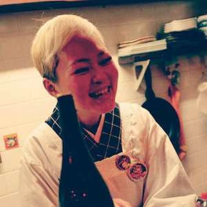
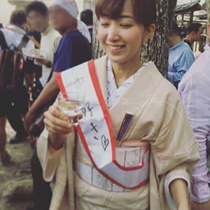

こんなときは「日本酒コンシェルジュ」へ！
- すっきりしたお酒はどれ？
- 普段飲めない珍しいお酒はどれ？
- お燗で美味しいのはどれ？
- 料理と合わせるポイントは？ etc


★藤田美由紀
『千喜千輝』CHIKI-CHIKI（大阪市福島区大開1−5−30）
大阪野田の片隅で生原酒普及のため孤軍奮闘するその姿から、日本酒業界のジャンヌダルクと言われてるとかいないとか…
生原酒の「殉教者」な彼女が当日は生原酒〜火入れまで幅広くオススメします！
★霜倉チャールズ元気
『大阪大学日本酒サークル 三代目代表』
初心者に寄り添うお酒「hajime」のプロデュースも手がける、若き日本酒の伝道師。「平成」生まれの健やかな感性が映し出す、「令和」の日本酒新たなページを目の当たりにしてください！


★宮村真由
『べにくらげ』（大阪市中央区本町橋5-4）
「美しすぎる女将」と呼ばれる端麗な容姿と生来のおとぼけぶりでオジサマ達を魅了し続ける姿から、日本酒業界の色気のないマリリンモンローと呼ばれているとかいないとか…。 「お熱いのがお好き」な彼女ですが、当日は冷酒〜燗酒まで幅広くオススメします！
★江口崇
『日本酒コンシェルジュ通信 代表』
この1年ではパリ・サンパウロ・台北へ。日本全国のみならず世界中をかけめぐり最新の清酒事情を追いかける日本酒ハンター。
知性と博愛に満ちたお酒選びで、湊町リバープレイスは、その時「世界」となります！